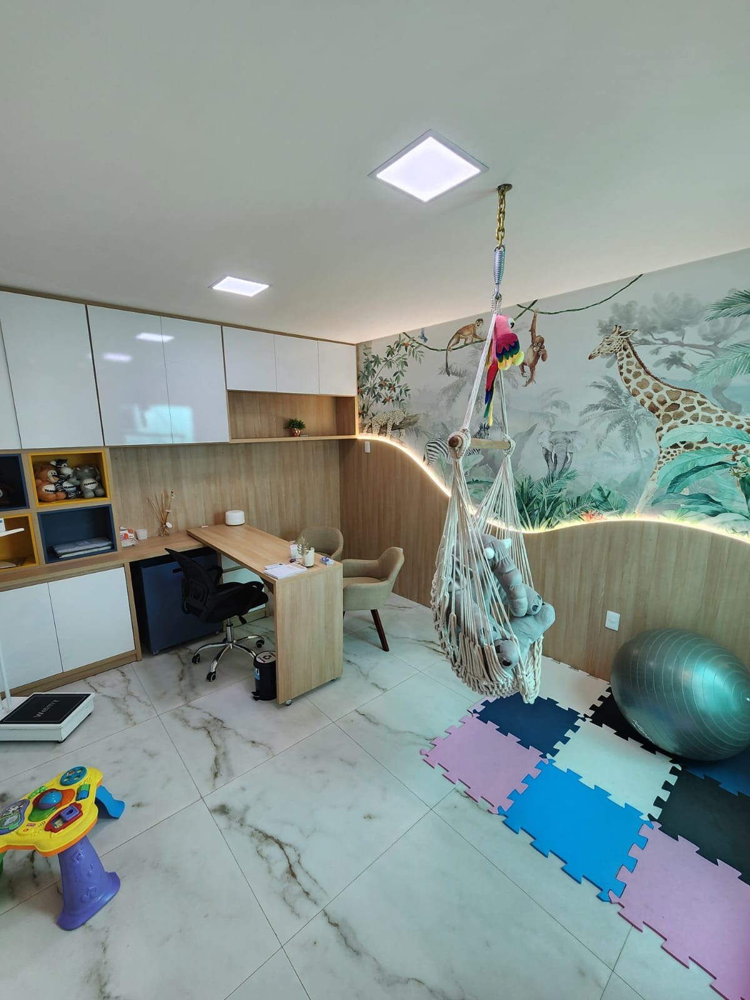
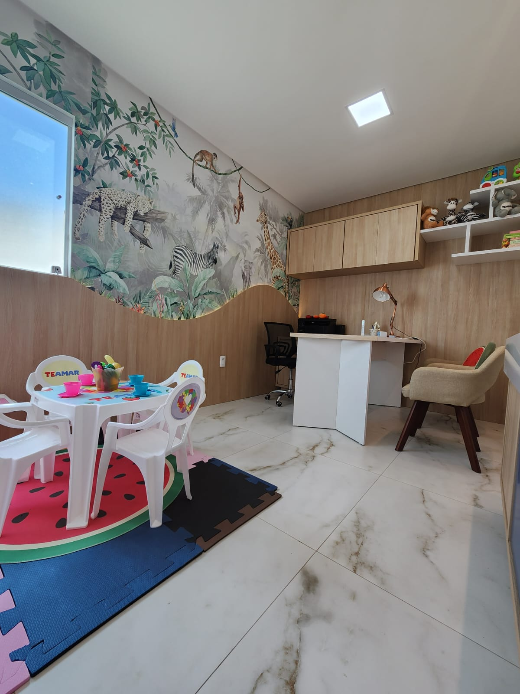
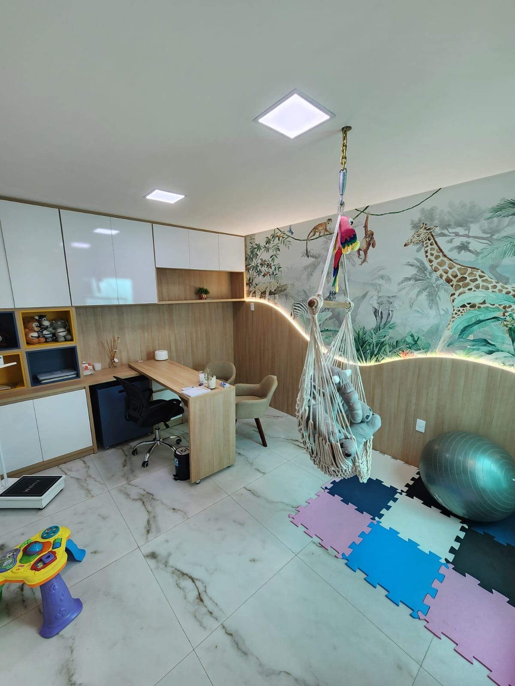
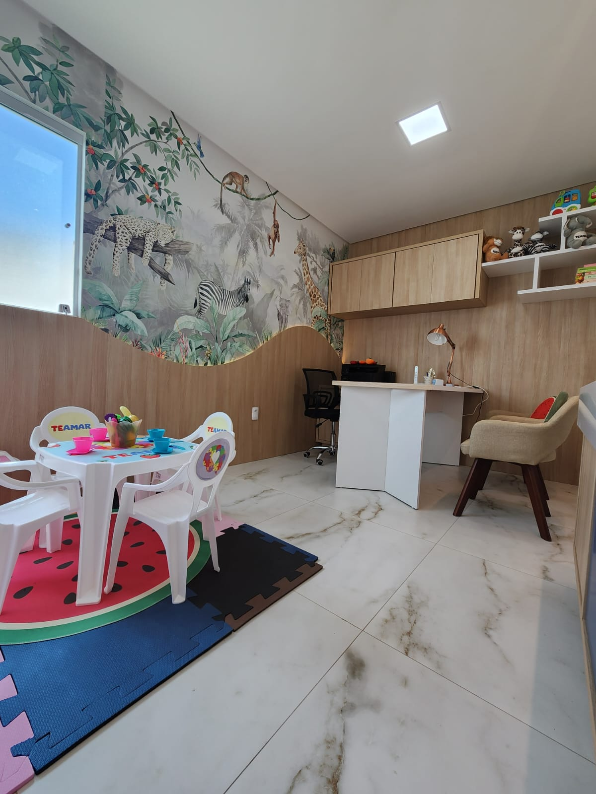

Bem-vindo à Teamar!
Na Teamar, temos o compromisso de oferecer cuidados de saúde de alta qualidade para pessoas de todas as idades. Nossa equipe é composta por médicos especializados em diversas áreas, garantindo um atendimento completo e personalizado para cada paciente! ❤️
Oferecemos consultas com especialistas em várias áreas da medicina, proporcionando um diagnóstico mais preciso e completo. veja mais aqui
Realizamos uma ampla gama de exames laboratoriais e de imagem, utilizando tecnologia de ponta para garantir resultados rápidos e confiáveis. veja mais aqui
Temos um foco especial em crianças com necessidades especiais, como TDAH e TEA. Nossa equipe multidisciplinar é treinada para oferecer um atendimento acolhedor e especializado, promovendo o desenvolvimento e o bem-estar dessas crianças!
Na Teamar acreditamos que cada paciente é único e merece um cuidado individualizado. Trabalhamos com dedicação para criar um ambiente seguro e acolhedor, onde todos se sintam valorizados e bem cuidados.
 


